▄█▄ ██ ▄▄▄▄▀ █▄▄▄▄ ████▄ ████▄ █▀▄▀█
█▀ ▀▄ █ █ ▀▀▀ █ █ ▄▀ █ █ █ █ █ █ █
█ ▀ █▄▄█ █ █▀▀▌ █ █ █ █ █ ▄ █
█▄ ▄▀ █ █ █ █ █ ▀████ ▀████ █ █
▀███▀ █ ▀ █ █
█ ▀ ▀
▀
Just a little page to celebrate my cat, my mom's cats, all the cats I've ever known and all the cats I never had the priviledge to know.
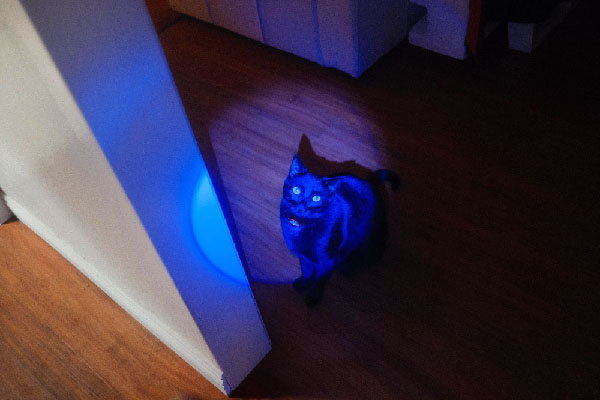
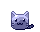
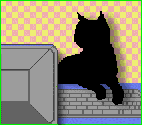
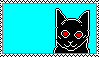
 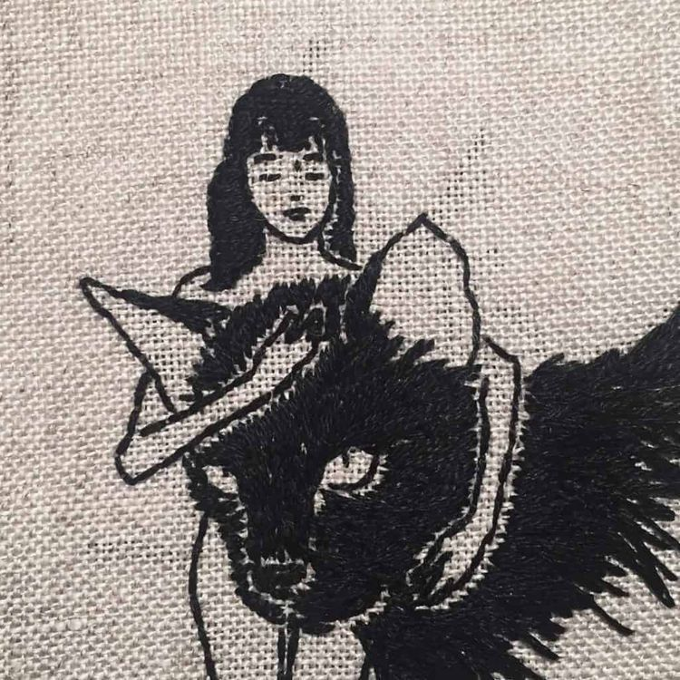
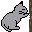
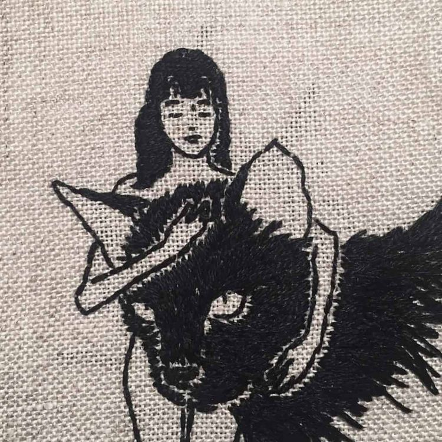
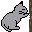

 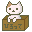
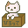
 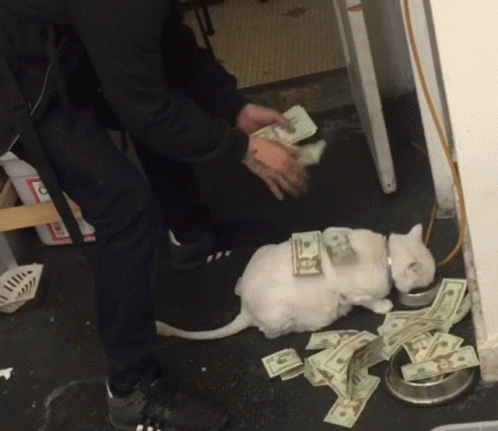
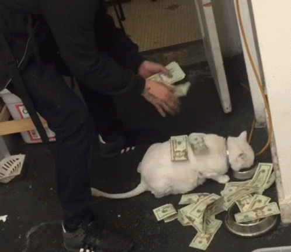

 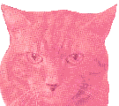
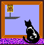
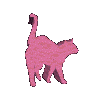
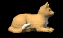
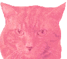
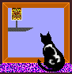
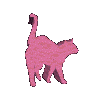
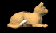
 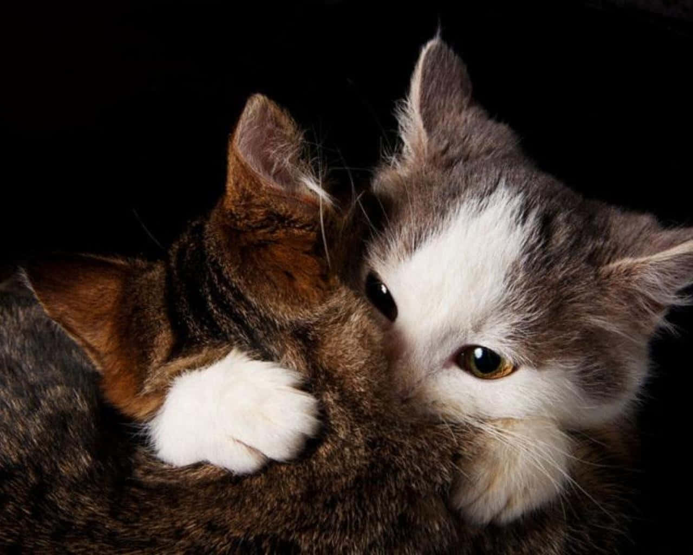
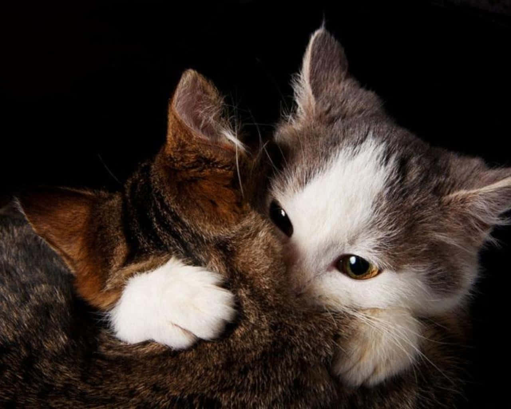
 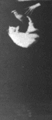
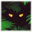
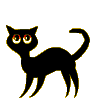
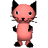
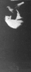
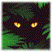
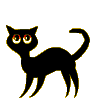
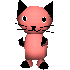
 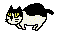
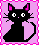
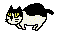
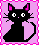
 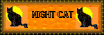
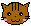
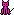
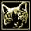
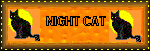
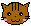
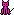
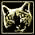

 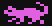
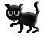
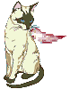
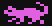
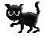
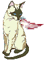

 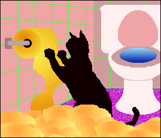
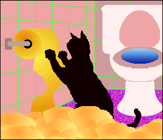

 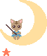
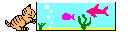
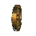
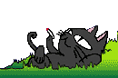
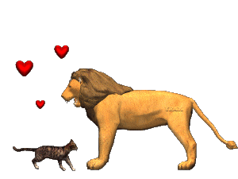
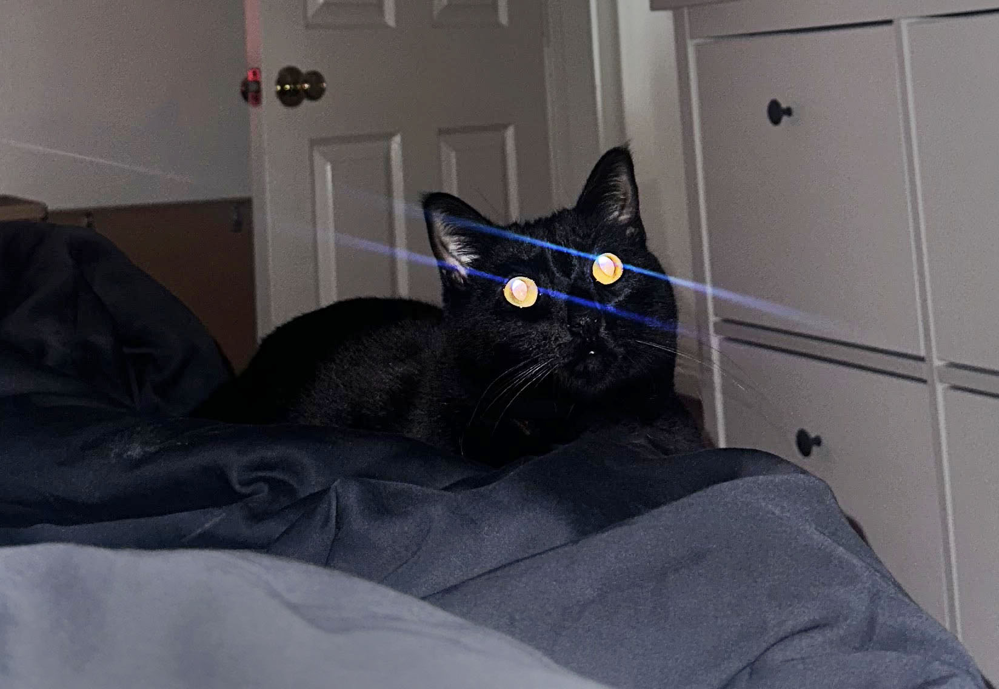
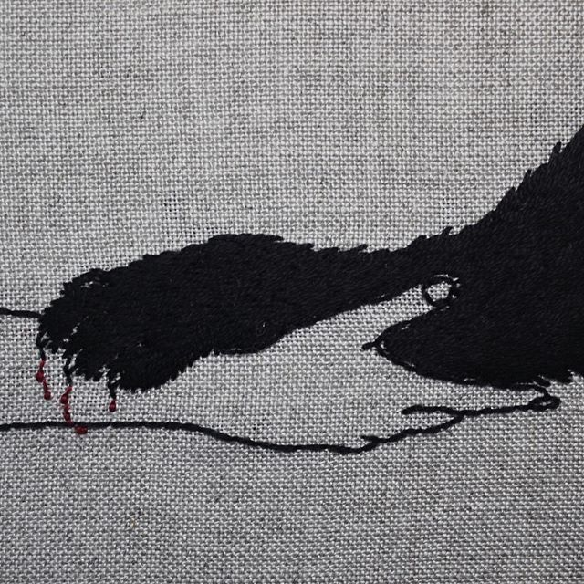
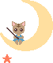
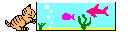
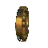
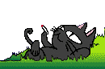
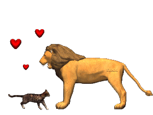
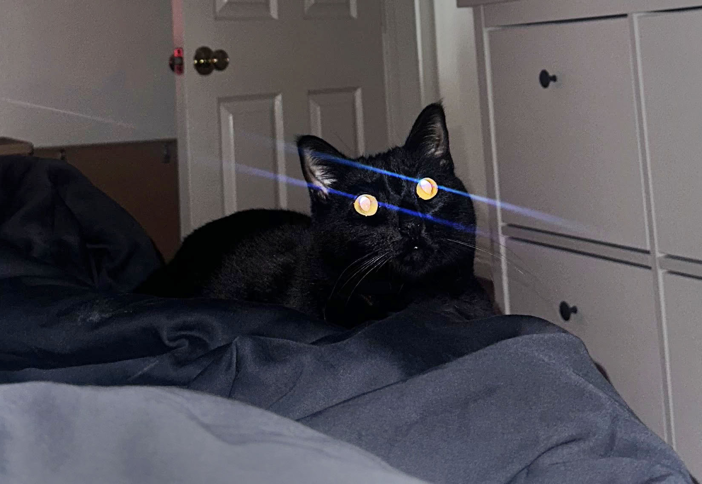
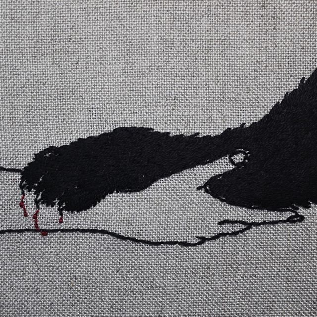


 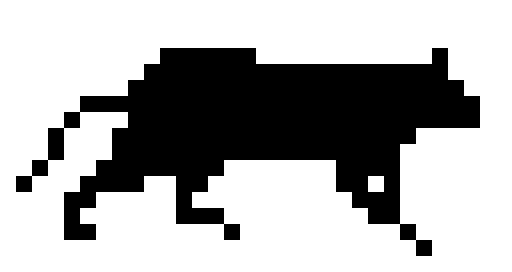
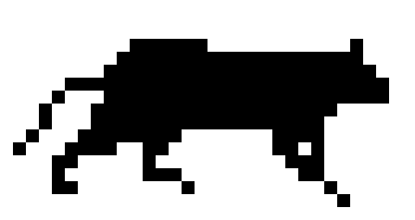